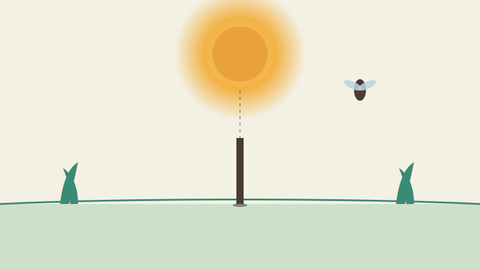

夏至

夏至是二十四节气中最早被确定的节气之一。古人用“土圭”测量日影，发现这一天正午的日影最短，于是把它定为“日长之至”，也就是夏至。
夏至这天，太阳直射北回归线，北半球各地的白昼时间达到全年最长。越往北白天越长，在我国最北端的漠河，白天可以长达约 17 个小时。
最长北半球白昼
北回归线太阳直射
三庚夏至后入伏
昼晷已云极，
宵漏自此长。
—— 唐 · 韦应物《夏至避暑北池》
宵漏自此长。
—— 唐 · 韦应物《夏至避暑北池》
夏至与冬至对比
| 对比项 | 夏至 | 冬至 |
|---|---|---|
| 公历日期 | 6月21日—22日 | 12月21日—23日 |
| 太阳直射点 | 北回归线 | 南回归线 |
| 北半球白昼 | 全年最长 | 全年最短 |
| 代表食物 | 面条 | 饺子、汤圆 |
夏至习俗
- 吃夏至面：俗话说“冬至饺子夏至面”，新麦刚刚收获，吃一碗凉面清爽消暑。
- 数伏：从夏至后第三个“庚日”开始入伏，一年中最热的“三伏天”就要来了。
- 消夏避暑：古时妇女互赠折扇、香粉，用来驱暑降温。
不过夏至不热。—— 农谚
夏至虽然白天最长，却并不是最热的时候。因为地面吸收的热量还在不断积累，真正的酷暑要等到小暑、大暑才会到来。